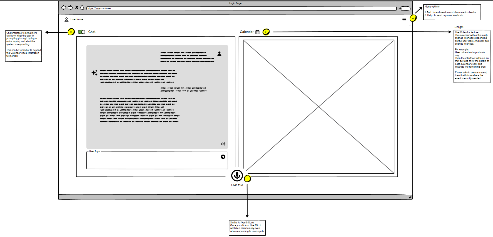
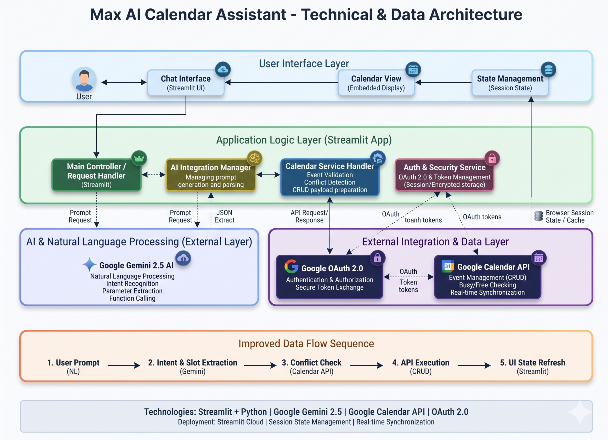
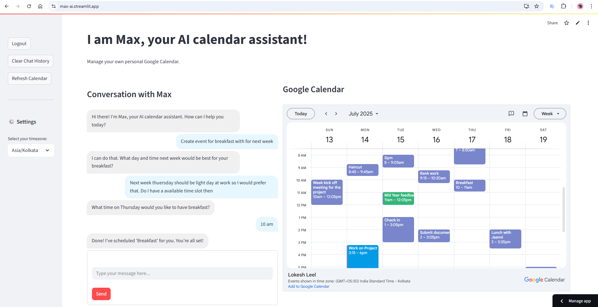

Max — AI Calendar Assistant
Turning everyday natural language into Google Calendar actions — built from user discovery around Android scheduling friction through wireframing, system architecture, and a live Streamlit MVP prototype.
Interactive Prototype
Test the live Streamlit MVP against a shared sandbox calendar powered by a Google service account, so no personal Google authentication is required.
Problem Discovery & User Research
While observing colleagues manage their daily schedules on Android, I noticed recurring friction around a seemingly simple task: adding a single calendar event. Creating an entry forced users through multi-step form fields and nested dropdowns—picking dates, start and end times, notifications, and descriptions manually.
Yet when those same colleagues talked aloud about their schedule, the mental model was effortless: "I have a Product demo meeting at 4 PM today." All the structured metadata existed in one natural sentence, but the mobile calendar UI made translating that sentence unnecessarily tedious.
I ran qualitative user interviews with colleagues to verify whether this friction was widespread rather than an isolated quirk. The interviews confirmed two insights:
- High entry tax on routine events: Users frequently delayed logging ad-hoc meetings or reminders on mobile because form entry interrupted their workflow.
- Confidence requires visual confirmation: Users wanted conversational speed without losing sight of their schedule, so any AI action had to stay anchored to a live calendar view to prevent double-booking.
Recognizing early that Google would likely introduce native conversational support over time, I scoped the build as a rapid desktop Streamlit prototype (MVP). My dual product goal was to validate the natural-language-to-calendar loop quickly and build hands-on fluency in AI prototyping before committing to native Android development.
Product Vision & Wireframe
Before writing code, I created low-fidelity wireframes in Balsamiq to map the target end-state experience for Max. Rather than treating chat as a standalone text box, the layout paired conversational input side-by-side with a live calendar canvas so users could immediately verify created or modified events.
- Continuous Voice Input (Live Mic): Modeled after hands-free conversational assistants so users could speak scheduling intent naturally.
- Context-Aware Live Calendar: Designed to dynamically zoom into queried days or newly created events while keeping surrounding slots visible.
- Collapsible Chat Toggle: Allowed users to collapse the conversation pane and expand the calendar to full screen when reviewing their week.

System Architecture & Technical Trade-offs
To take Max from wireframe to an interactive MVP without engineering overhead, I designed a modular four-layer architecture balancing speed of iteration with real calendar reliability:
MVP Stack

MVP Prototype Result & Outcome
The shipped Streamlit prototype validates the core scheduling loop end to end: users type natural requests, Max asks clarifying follow-ups when details like time are missing, checks existing availability, and updates the embedded Google Calendar view on the right.
Conversational Flows Supported in Prototype:
- "Create event for breakfast for next week" → multi-turn clarification on day & time
- "What do I have scheduled for tomorrow?" → natural-language schedule lookup
- "Move the team meeting to Friday at 10 AM" → conflict check & update
- "Delete the canceled project review" → event lookup & removal

Outcome & Validation
In informal benchmark checks with myself and colleagues comparing Max against standard manual calendar form entry, scheduling speed improved substantially once multi-field dropdown navigation was replaced by a single conversational prompt.
Validated Value
- Faster capture: Eliminated repetitive date/time picker taps for routine bookings
- Ambiguity handling: Multi-turn follow-ups handled incomplete prompts and typos gracefully
- Side-by-side trust: Live visual calendar feedback eliminated anxiety over where AI placed events
Prototype Learnings
- Context matters: Explicit timezone selection and "today" anchors were critical for accurate relative dates
- Prompt guardrails: Reliable JSON/tool calls required strict schema validation before hitting Calendar APIs
- OAuth friction: Unverified Google OAuth restricts external testing, making a sandboxed demo essential
Future Enhancements & Sunset Decision
While the prototype validated demand for conversational scheduling, moving from an MVP to the full target vision outlined in the wireframes surfaced a broader roadmap of capabilities:
- Voice-first mobile UX (Live Mic) tailored for on-the-go Android scheduling
- Multi-calendar support across personal and work accounts
- Smart time-slot suggestions based on schedule density and preferences
- Meeting room booking and attendee availability coordination
- Recurring event templates and cross-tool productivity integrations
Sunset
It finally happened! On October 3, 2024, Google announced Gemini Live expansion alongside native Extensions for Google Calendar, Tasks, and Keep on Android. This brought first-party, OS-level natural language calendar actions directly to Android devices.
With Google's native distribution and system-level integrations directly solving the scheduling friction Max targeted, building a standalone third-party assistant wrapper no longer presented a defensible product moat.